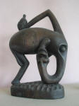

Our intrepid buyers travel the globe to keep our emporium of handcrafted goods fully stocked withunique items. Come visit us to see our unbelievable collection of hand-carved furniture, beautiful jewelry and textiles, and other artisan crafts from around the world.
Our buyers are just back from Africa with our largest selection ever of African masks, carvings, and textiles.
Come see the diversity of this stunning selection, representing many African cultures.
World Bead Collection
Looking for the perfect beads to finish your project?
You won't believe our beautiful collection of beads from every corner of the globe. Featuring both new and vintage designs.
While it's true we have a storehouse of exotic items from far-flung cultures, we love to feature American handicrafts, too. Just in is a selection of hand-stitched Kentucky quilts and amazing hammered dulcimers.
Visit the National Quilt Museum Web site to learn more about Kentucky Quilts.While our products are of the highest quality, we have something for every budget. So be sure to stop in and spend some time with us.